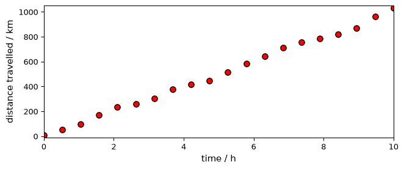
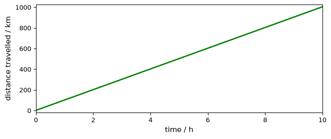
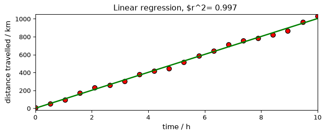
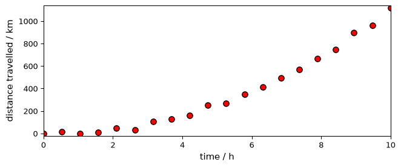
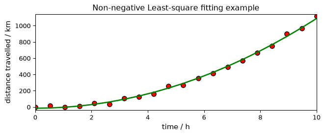
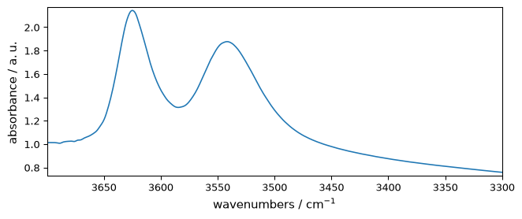
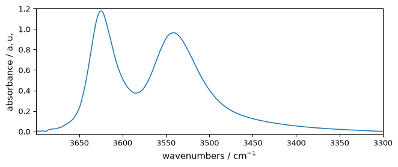
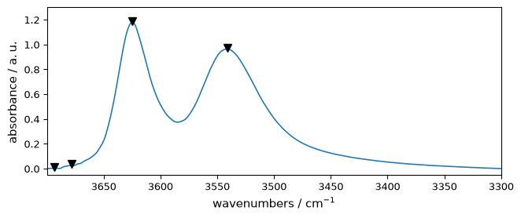
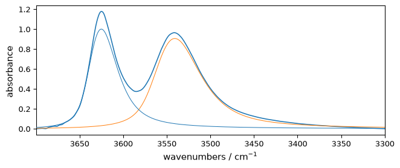
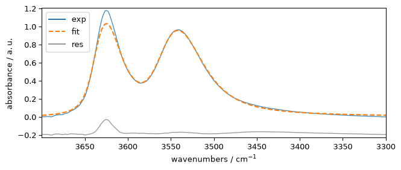

Fitting
[1]:
import numpy as np
import spectrochempy as scp
from spectrochempy import ur
Solving a linear equation using the least square method (LSTSQ)
In the first example, we find the least square solution of a simple linear equation.
Let’s first create a NDDataset with some data. We have for instance some noisy data that represent the distance d traveled by some objects versus time t:
[2]:
def func(t, v, var):
d = v * t + (np.random.rand(len(t)) - 0.5) * var
d[0].data = 0.0
return d
time = scp.Coord.linspace(0, 10, 20, title="time", units="hour")
d = scp.fromfunction(
func,
v=100.0 * ur("km/hr"),
var=60.0 * ur("km"),
# extra arguments passed to the function v, var
coordset=scp.CoordSet(t=time),
name="mydataset",
title="distance travelled",
)
Here is a plot of these data-points:
[3]:
prefs = scp.preferences
prefs.figure.figsize = (7, 3)
_ = d.plot_scatter(markersize=7, mfc="red", label="Original data")

We want to fit a line through these data-points of equation
\(d = v.t + d_0\)
By construction, we know already that the line should have a gradient of roughly 100 km/h and cut the y-axis at, more or less, 0 km.
Using LSTSQ, the solution is found very easily:
[4]:
lst = scp.LSTSQ()
_ = lst.fit(time, d)
v, d0 = lst.coef, lst.intercept
print(f"speed : {v:.3f}, distance at time 0 : {d0:.3f}")
dfit = lst.predict()
_ = dfit.plot_pen(clear=False, color="g", lw=2, label=" Fitted line", legend="best")
speed : 100.264 kilometer hour^-1, distance at time 0 : 0.635 kilometer

Note
In the particular case where the variation is proportional to the x dataset coordinate, the same result can be obtained directly using d as a single parameter on LSTSQ (as t is the x coordinate axis!)
[5]:
lst = scp.LSTSQ()
_ = lst.fit(d)
v, d0 = lst.coef, lst.intercept
and the final plot
[6]:
_ = d.plot_scatter(
markersize=7,
mfc="red",
mec="black",
label="Original data",
title=f"Linear regression, $r^2={lst.score(): .3f} ",
)
dfit = lst.predict()
_ = dfit.plot_pen(clear=False, color="g", lw=2, label=" Fitted line", legend="best")

Let’s try now with a quadratic increase of the speed:
[7]:
def func(t, a, var):
d = a * (t / 3.0) ** 2 + (np.random.rand(len(t)) - 0.8) * var
for i in range(t.size):
if d[i].magnitude < 0:
d[i] = 0.0 * d.units
return d
time = scp.Coord.linspace(0, 10, 20, title="time", units="hour")
d2 = scp.NDDataset.fromfunction(
func,
a=100.0 * ur("km/hr^2"),
var=60.0 * ur("km"),
# extra arguments passed to the function v, var
coordset=scp.CoordSet(t=time),
name="mydataset",
title="distance travelled",
)
_ = d2.plot_scatter(markersize=7, mfc="red")

Now we must use the first syntax LSTQ(X, Y) as the variation is not proportional to time, but to its square.
[8]:
X = time**2
lst = scp.LSTSQ()
_ = lst.fit(X, d2)
v, d0 = lst.coef, lst.intercept
print(f"acceleration : {v:.3f}, distance at time 0 : {d0:.3f}")
acceleration : 11.031 kilometer hour^-2, distance at time 0 : -15.887 kilometer
[9]:
_ = d2.plot_scatter(
markersize=7,
mfc="red",
mec="black",
label="Original data",
title="Least-square fitting example on quadratic data",
)
dfit = lst.predict()
_ = dfit.plot_pen(clear=False, color="g", lw=2, label=" Fitted line", legend="best")
Least square with non-negativity constraint (NNLS)
When fitting data with LSTSQ, it happens that we get some negative values were it should not, for instance having a negative distance at time 0.
In this case, we can use the NNLS method of fitting. It operates as LSTSQ but keep the Y values always positive.
[10]:
X = time**2
nls = scp.NNLS()
_ = nls.fit(X, d2)
v, d0 = lst.coef, lst.intercept
print(f"acceleration : {v: .3f}, distance at time 0 : {d0: .3f}")
acceleration : 11.031 kilometer hour^-2, distance at time 0 : -15.887 kilometer
[11]:
_ = d2.plot_scatter(
markersize=7,
mfc="red",
mec="black",
label="Original data",
title="Non-negative Least-square fitting example",
)
dfit = lst.predict()
_ = dfit.plot_pen(clear=False, color="g", lw=2, label=" Fitted line", legend="best")

NDDataset modelling using non-linear optimisation method
First we will load an IR dataset
[12]:
nd = scp.read("irdata/nh4y-activation.spg")
As we want to start with a single 1D spectra, we select the last one (index -1)
[13]:
nd = nd[-1].squeeze()
# nd[-1] returns a nddataset with shape (1,5549)
# this is why we squeeze it to get a pure 1D dataset with shape (5549,)
Now we slice it to keep only the OH vibration region:
[14]:
ndOH = nd[3700.0:3300.0]
_ = ndOH.plot()

Baseline correction
We can perform a linear baseline correction to start with this data (see the :doc:baseline tutorial </userguide/processing/baseline>). For removing a linear baseline, the fastest method is however to use the abc ( automatic baseline correction)
[15]:
ndOHcorr = scp.basc(ndOH)
_ = ndOHcorr.plot()

Peak finding
Below we will need to start with some guess of the peak position and width. For this we can use the find_peaks() method (see :doc:Peak finding tutorial </userguide/analysis/peak_finding>)
[16]:
peaks, _ = ndOHcorr.find_peaks()
peaks.x.values
[16]:
| Magnitude | [3693.693 3678.355 3624.857 3541.323] |
|---|---|
| Units | cm-1 |
[17]:
ax = ndOHcorr.plot_pen() # output the spectrum on ax. ax will receive next plot too
pks = peaks + 0.01 # add a small offset on the y position of the markers
_ = pks.plot_scatter(
ax=ax,
marker="v",
color="black",
clear=False, # we need to keep the previous output on ax
data_only=True, # we don't need to redraw all things like labels, etc...
ylim=(-0.05, 1.3),
)

The maximum of the two major peaks are thus exactly at 3624.61 and 3541.68 cm\(^{-1}\)
Fitting script
Now we will define the fitting procedure as a script
[18]:
script = """
#-----------------------------------------------------------
# syntax for parameters definition :
# name : value, low_bound, high_bound
# * for fixed parameters
# $ for variable parameters
# > for reference to a parameter in the COMMON block
# (> is forbidden in the COMMON block)
# common block parameters should not have a _ in their names
#-----------------------------------------------------------
#
COMMON:
# common parameters ex.
# $ gwidth: 1.0, 0.0, none
$ gratio: 0.1, 0.0, 1.0
$ gasym: 0.1, 0, 1
MODEL: LINE_1
shape: asymmetricvoigtmodel
* ampl: 1.0, 0.0, none
$ pos: 3624.61, 3610.0, 3640.0
> ratio: gratio
> asym: gasym
$ width: 200, 0, 1000
MODEL: LINE_2
shape: asymmetricvoigtmodel
$ ampl: 0.2, 0.0, none
$ pos: 3541.68, 3520.0, 3560.0
> ratio: gratio
> asym: gasym
$ width: 200, 0, 1000
"""
Syntax for parameters definition
In such script, the char # at the beginning of a line denote that the whole line is a comment. Comments are obviously optional but may be useful to explain
Each individual model component is identified by the keyword MODEL
A MODEL have a name, e.g., MODEL: LINE_1 .
Then come for each model components its shape , i.e., the shape of the line.
Come after the definition of the model parameters depending on the shape, e.g., for a gaussianmodel we have three parameters: amplitude (ampl), width and position (pos) of the line.
To define a given parameter, we have to write its name and a set of 3 values: the expected value and 2 limits for the allowed variations : low_bound, high_bound:
name : value, low_bound, high_bound
These parameters are preceded by a mark saying what kind of parameter it will behave in the fit procedure:
$is the default and denote a variable parameters*denotes fixed parameters>say that the given parameters is actually defined in a COMMON block
COMMONis the common block containing parameters to which a parameter in the MODEL blocks can make reference using the > markers. (> obviously is forbidden in the COMMON block) common block parameters should not have a _(underscore) in their names
With this parameter script definition, you can thus make rather complex search for modelling, as you can make parameters dependents or fixed.
The line shape can be (up to now) in the following list of shape (for 1D models - see below for 2D):
PolynomialBaseline ->
polynomialbaseline:Arbitrary-degree polynomial (degree limited to 10, however). As a linear baseline is automatically calculated during fitting, this polynom is always of greater or equal to order 2 (parabolic function at the minimum).
\(f(x) = ampl * \sum_{i=2}^{max} c_i*x^i\)
MODEL: baseline shape: polynomialbaseline # This polynomial starts at the order 2 $ ampl: val, 0.0, None $ c_2: 1.0, None, None * c_3: 0.0, None, None * c_4: 0.0, None, None # etc
Gaussian Model ->
gaussianmodel:Normalized 1D gaussian function.
\(f(x) = \frac{ampl}{\sqrt{2 \pi \sigma^2}} \exp({\frac{-(x-pos)^2}{2 \sigma^2}})\)
where \(\sigma = \frac{width}{2.3548}\)
MODEL: Linex shape: gaussianmodel $ ampl: val, 0.0, None $ width: val, 0.0, None $ pos: val, lob, upb
Lorentzian Model ->
lorentzianmodel:A standard Lorentzian function (also known as the Cauchy distribution).
\(f(x) = \frac{ampl * \lambda}{\pi [(x-pos)^2+ \lambda^2]}\)
where \(\lambda = \frac{width}{2}\)
MODEL: liney: shape: lorentzianmodel $ ampl:val, 0.0, None $ width: val, 0.0, None $ pos: val, lob, upb
Voigt Model ->
voigtmodel:A Voigt model constructed as the convolution of a
GaussianModeland aLorentzianModel– commonly used for spectral line fitting.MODEL: linez shape: voigtmodel $ ampl: val, 0.0, None $ width: val, 0.0, None $ pos: val, lob, upb $ ratio: val, 0.0, 1.0
Asymmetric Voigt Model ->
asymmetricvoigtmodel:An asymmetric Voigt model (A. L. Stancik and E. B. Brauns, Vibrational Spectroscopy, 2008, 47, 66-69)
MODEL: linez shape: voigtmodel $ ampl: val, 0.0, None $ width: val, 0.0, None $ pos: val, lob, upb $ ratio: val, 0.0, 1.0 $ asym: val, 0.0, 1.0
For quick synthetic profiles outside the fitting workflow, SpectroChemPy also exposes direct helpers at the top level: scp.gaussian, scp.lorentzian, scp.voigt, scp.asymmetricvoigt, and scp.sigmoid.
Validate the script before fitting
You do not have to wait for the fit to discover errors in the script. Call :meth:~spectrochempy.analysis.curvefitting.optimize.Optimize.validate_script to check the script before launching the optimisation:
[19]:
f1 = scp.Optimize(log_level="INFO")
errors = f1.validate_script(script)
errors # should be an empty list if the script is valid
[19]:
[]
If the script contains an error, errors will contain :class:~spectrochempy.analysis.curvefitting.optimize.ScriptError objects with the line number, the offending line, and a human-readable explanation. An empty list means the script is syntactically correct and all model references are recognised.
Optimize also exposes validate_constraints() for lightweight validation of constraint specifications before fitting. At the moment this is deliberately a narrow surface: it validates the structure of recognized constraint specs and any referenced parameter names from the script, but it should not yet be read as a complete guarantee of backend-level constraint enforcement.
The currently supported minimal schema is intentionally small. For example, the following constraint specification is accepted and normalized:
[20]:
constraint_spec = {"max_connections": 2}
f1.validate_constraints(constraint_spec)
f1.constraints = constraint_spec
f1.constraints
[20]:
{'type': 'max_connections', 'limit': 2, 'parameters': None}
This currently demonstrates validation and normalization of the public constraint surface. It should not yet be read as a promise of rich constraint semantics during optimization. The short form shown above is normalized to the canonical stored form:
short form:
{"max_connections": 2}canonical form:
{"type": "max_connections", "limit": 2, "parameters": None}
Choosing a fitting method
Optimize currently exposes four public values for method:
least_squaresleastsqsimplexbasinhopping
In practice, these fall into three maintained families:
Public method |
Current role |
Type of search |
Current internal path |
Jacobian / covariance path |
|---|---|---|---|---|
|
recommended local least-squares entrypoint |
local least-squares fit |
SciPy |
yes, when available |
|
compatibility alias |
local least-squares fit |
same SciPy |
yes, when available |
|
derivative-free local fallback |
local derivative-free search |
SciPy simplex ( |
no |
|
exploratory global-style option |
global-style exploratory search |
SciPy |
no |
The main user-facing guidance is:
start with
least_squaresfor ordinary peak fitting and most well-initialized models;treat
leastsqmainly as a backwards-compatible spelling, not as a distinct maintained strategy;try
simplexwhen you want a derivative-free local search and can accept losing the least-squares uncertainty path;try
basinhoppingonly when the landscape is difficult enough to justify a slower exploratory search.
The current implementation automatically chooses between the least-squares backend variants lm and trf depending on the size of the varying-parameter problem. This choice is internal: users select the high-level method, not the low-level SciPy backend directly.
[21]:
method_summary = {
"recommended_default": "least_squares",
"compatibility_alias": "leastsq",
"derivative_free_local": "simplex",
"exploratory_global": "basinhopping",
}
method_summary
[21]:
{'recommended_default': 'least_squares',
'compatibility_alias': 'leastsq',
'derivative_free_local': 'simplex',
'exploratory_global': 'basinhopping'}
Other useful fitting modes
Several public options affect how a fit is prepared:
dry=Truevalidates the script and assembles the starting model without running the optimizer;autobase=Trueadds an automatic baseline correction step before fitting;autoampl=Trueadjusts initial amplitudes automatically;amplitude_mode="height"or"area"controls how line-shape amplitudes are initialized;warm_start=Truepreserves the current estimator configuration instead of forcing a full reset to default configuration values during estimator reinitialization.
These options do not all answer the same question:
methodchooses how the numerical search is run;dry,autobase,autoampl, andamplitude_modehelp define how the fit starts;warm_startis a broader estimator-state option and should not be read as a dedicatedOptimizesolver warm-start backend.
The availability of advanced post-fit quantities depends on the chosen method. Least-squares-backed methods can expose a retained Jacobian and therefore the uncertainty path (covariance, stderr, correlation, confidence_intervals). simplex and basinhopping still produce fitted curves and residual diagnostics, but they do not currently expose the same uncertainty information.
[22]:
f1.script = script
f1.max_iter = 2000
# f1.autobase = True
_ = f1.fit(ndOHcorr)
**************************************************
Result:
**************************************************
COMMON:
$ gratio: 0.5474, 0.0, 1.0
$ gasym: 0.8842, 0.0, 1.0
MODEL: line_1
shape: asymmetricvoigtmodel
* ampl: 1.0000, 0.0, none
> asym:gasym
$ pos: 3622.7494, 3610.0, 3640.0
> ratio:gratio
$ width: 48.6369, 0.0, 1000.0
MODEL: line_2
shape: asymmetricvoigtmodel
$ ampl: 0.9059, 0.0, none
> asym:gasym
$ pos: 3537.1347, 3520.0, 3560.0
> ratio:gratio
$ width: 77.5669, 0.0, 1000.0
[23]:
fitted = f1.result.fitted
components = f1.result.components
f1.result groups fitted outputs and diagnostics without removing the existing direct estimator surface. Direct access such as f1.components, f1.predict(), and plotting helpers remains supported.
f1.result.parameters stores the configuration snapshot of the completed run: method choice, iteration limits, and fit-preparation options such as dry, autobase, autoampl, amplitude_mode, and normalized constraints. It should be read as run configuration, not as a table of solved scientific parameter values.
[24]:
{
key: f1.result.parameters[key]
for key in (
"method",
"max_iter",
"dry",
"autobase",
"autoampl",
"amplitude_mode",
"constraints",
)
}
[24]:
{'method': 'least_squares',
'max_iter': 2000,
'dry': False,
'autobase': False,
'autoampl': False,
'amplitude_mode': 'height',
'constraints': {'type': 'max_connections', 'limit': 2, 'parameters': None}}
Raw solver artifacts stay on the estimator. Least-squares-backed methods keep the retained Jacobian on f1.jacobian, while simplex, basinhopping, and dry fits return None. f1.result.covariance is the first scientific interpretation built on top of that Jacobian: it is an approximate local least-squares covariance matrix, scaled by the residual variance and degrees of freedom. f1.result.variance and f1.result.stderr expose the diagonal terms and standard errors derived
from that covariance, and f1.result.correlation exposes the normalized parameter-correlation matrix. f1.result.confidence_intervals now exposes approximate two-sided 95% confidence intervals derived from the fitted values, standard errors, and a Student-t critical value based on the residual degrees of freedom. These quantities are only available when a backend provides a stable Jacobian and should not be confused with a full uncertainty report. Model-comparison diagnostics are also
available in f1.result.diagnostics, including aic and bic.
The fitted components remain regular datasets, so they can be plotted directly against the corrected spectrum.
[25]:
_ = ndOHcorr.plot()
ax = (components[:]).plot(clear=False)
ax.autoscale(enable=True, axis="y")

plotmerit() overlays the experimental spectrum, the fitted profile, and the residuals. Here we use a small residual offset to keep the three traces easy to inspect in a notebook. Short legend labels and an explicit legend position keep the annotation clear on the compact tutorial figure.
[26]:
som = fitted
_ = f1.plotmerit(
offset=15,
exp_label="exp",
calc_label="fit",
resid_label="res",
legend_loc="upper left",
)

Todo
Tutorial to be continued with other methods of optimization and fitting (2D…)